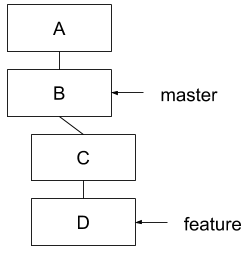

Git Internals
Aaron Kuehler
This talk is
a high level tour of git's internals
This talk isn't
a git tutorial
What is Git?
You might think…
Git is a distributed revision control system with an emphasis on speed, data integrity, and support for distributed, non-linear workflows. Git was initially designed and developed by Linus Torvalds for Linux kernel development in 2005, and has since become the most widely adopted version control system for software development… - Wikipedia. Retrieved May 15, 2015, from http://en.wikipedia.org/wiki/Git_(software)
WRONG!
It's a inter-dimensional, time traveling spaceship!

Managing History
"Legacy" Version Control Systems
- A list of changes to a collection of files
Git
- A stream of snapshots of the repository's filesystem
- If a file hasn't changed, a reference to the previous version is stored
But we'll talk about time travel later…
Change management
- 3 states of changes
- Modified
- Staged for commit
- Committed
Working Directory
- Project root directory
- Contents are at a single version state of the project
- Files are pulled out of the git object database and put onto disk to be modified
- Changes are introduced here
Index
- A file in the .git directory
- Commit staging area
- Groups changes across repository contents as a logical change set
- Add changes to the index with
=> git add
Repository
- Is the .git directory at the project root
- Persistent, compressed object database
- Changes become permanent residents of the repository through Commits
=> git commit
.git - The Object Database
- Repository Metadata and Objects
- A key-value store (Checksums => Contents)
Hashing
- INPUT: Any amount of data
- OUTPUT: Fixed-size checksum
Identity
- Git generates a hash for any piece of information it's told to save
- Objects are identified ONLY by the checksum of their contents
- Hashes are unambigous identifiers
- Filesystem names and paths only tell you where; not what
Integrity
- Hashing makes it difficult to falsify objects
- Hashing makes it easy to detect bit-level storage errors
Objects
- Generic term for a HASH => Contents relationship
- 3 general types of objects…
Blob Objects
- Contents of a files
=> ls total 64 drwxr-xr-x 6 aaronk staff 204B May 17 17:13 . drwxr-xr-x 6 aaronk staff 204B May 17 15:46 .. -rw-r--r-- 1 aaronk staff 13K May 17 17:13 git.html -rw-r--r-- 1 aaronk staff 6.2K May 17 17:13 git.org drwxr-xr-x 19 aaronk staff 646B May 17 11:26 images
=> git hash-object git.org 6c11c174df16c742f3af39e8fcfce59e145b5d1a
Tree Objects
- Akin to UNIX directory entries
- Group blobs and other tree objects
- Describes the filesystem mode, type, hash, and name of contents
=> git ls-tree 63ceca3c82ef64d7d6e7089d26a0a0abe2f4ff06 100644 blob 226c35d6fa666f398ab7f1c868f92787dad05300 git.html 100644 blob 31708a9b9b554bb9bab6ad12df9bf2e7946c2d3a git.org 040000 tree dc14fe90c649ea8b5a5f1afaeee620f1f3a69846 images
Commit Objects
- Identified by Hash of the root tree object
- Records entire state of the repository at a point in time
- Commit Meta-data
- Author, subject and log message, when it was made
=> git log --oneline -n 1 b2849d3 initial commit
=> git ls-tree b2849d3 040000 tree 63ceca3c82ef64d7d6e7089d26a0a0abe2f4ff06 git 160000 commit 07197b1eae80a264fd9ff7dc68316ae60e5ace29 reveal.js
History
- A Commit object knows the hash of the commit that came before it
- It is easy to detect when history has been rewritten
- Some parent commit's hash will fail checksum validation
Branches
- Two or more commits share the same parent
- Use to segregate and track unrelated change sets
- Branches are CHEAP! (it's just a parent commit ref)
HEAD
- Mapping of a Name => Commit
- Adding a commit on a branch reassigns the HEAD ref to the new commit
Spoiler Alert
- All HEADs are created equal
- Nothing special about the master or develop HEAD refs
- It's just a naming convention
Changing the course of history
- Commit E is a mistake

Changing the course of history
- Change the feature/xyz HEAD ref Commit D
Changing the course of history
- Make a new commit

Changing the course of history
- Unreachable commits are removed from the repository
=> git gc
Creating Parallel Universes
- Change historical events to create a new version of reality
- Called Rebasing
Rebasing
- What if we forgot to add something as part of commit B

Rebasing
- Go back in time and make the commit you wish you had instead of commit B – commit F

Rebasing
- OK, now what?
- Can't just move the feature/xyz HEAD
- We'd lose commits D and E

Rebasing
- Git can calculate diffs between parent and child commits
- Rebasing does this for all commits after B
- Then applies the diffs as new commits on top of F

Practical Rebasing
- feature/xyz is based off of master at commit A
Practical Rebasing
- Change happens on master
Practical Rebasing
- Change feature/xyz history to make it look like we started off of commit D
With great power…
- Changing shared history can be bad
- Leaves fellow time travelers stuck in unreferenced, parallel dimensions
Resources
- Pro Git (http://git-scm.com/book/en/v2)
- Git From the Bottom Up (http://ftp.newartisans.com/pub/git.from.bottom.up.pdf)